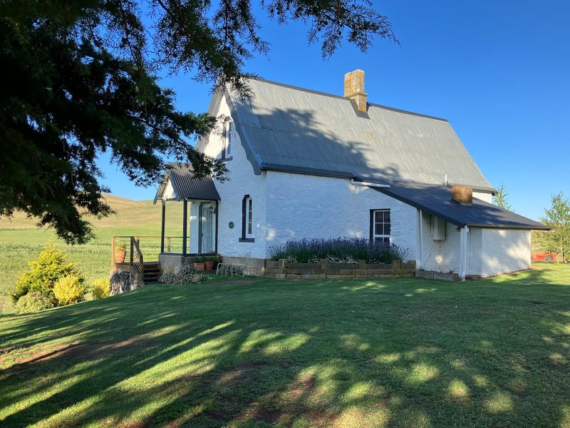
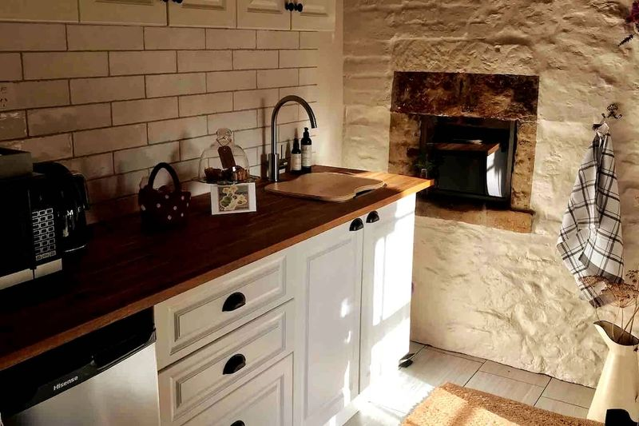
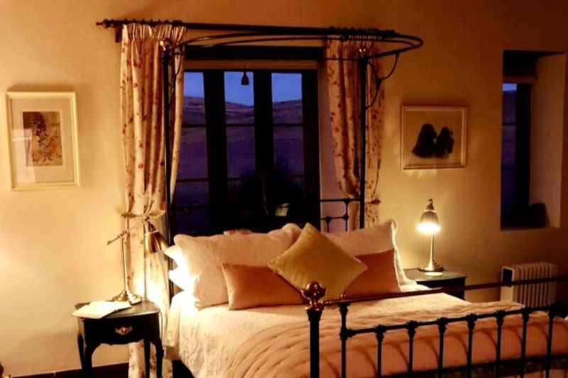
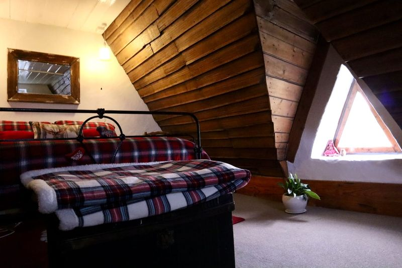

1854
Elizabeth's Cottage
Designed by the ex-convict architect Frederick Thomas to house immigrant farm families. A high pitched roof, a five metre ceiling, the original wooden staircases, deep-set windows and baker's ovens, and a huge sandstone fireplace in the sitting room. The verandah runs the length of the cottage.
- Bedrooms
- Main bedroom downstairs with an ensuite and an extra single. An attic room up very steep, narrow stairs.
- Kitchen
- Fully equipped.
- Note
- Not suited to children under 12.
5.0 from 211 reviews on Airbnb



